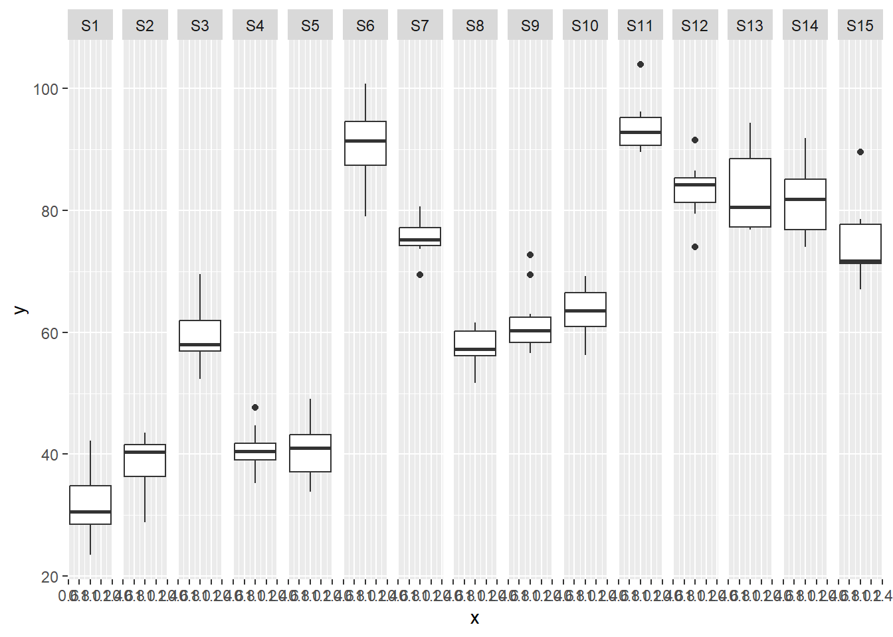
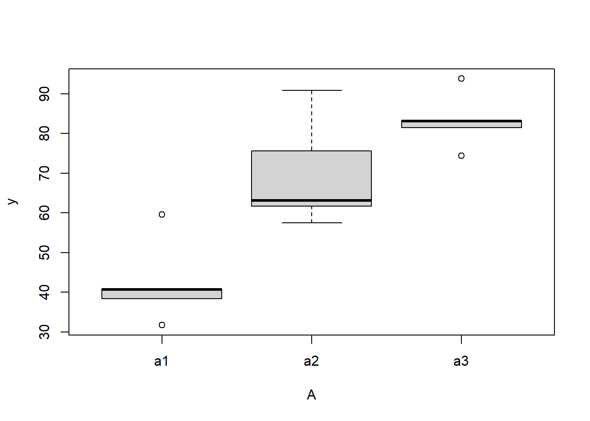
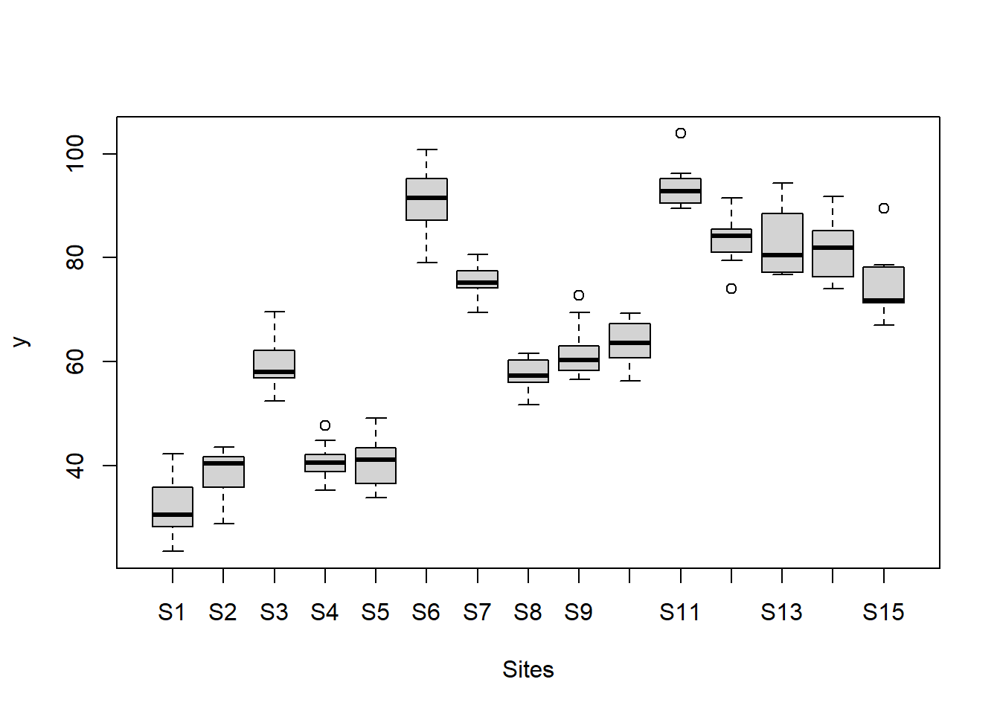
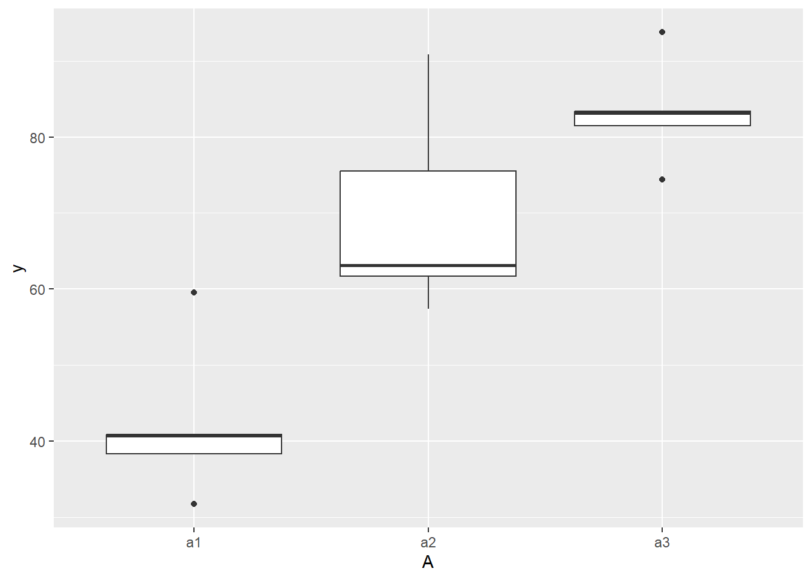
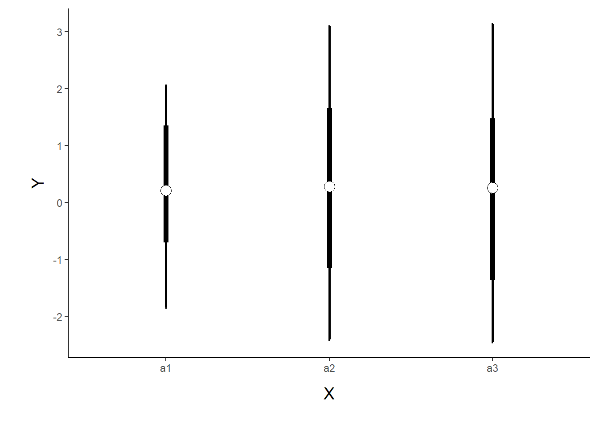
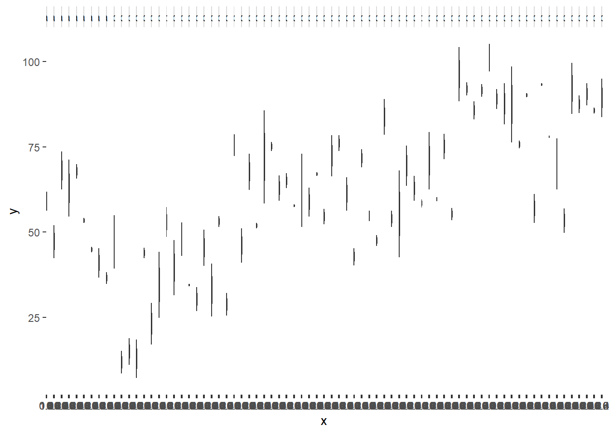
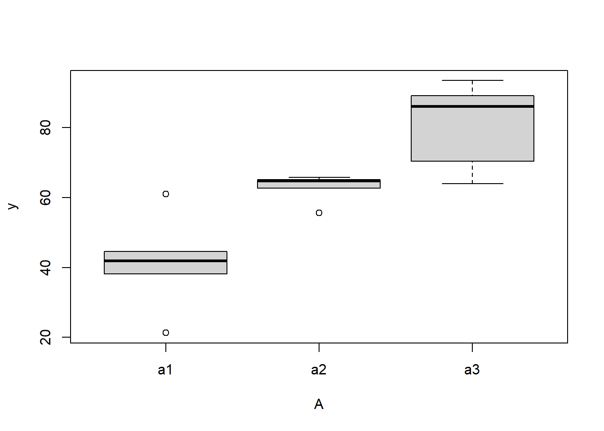
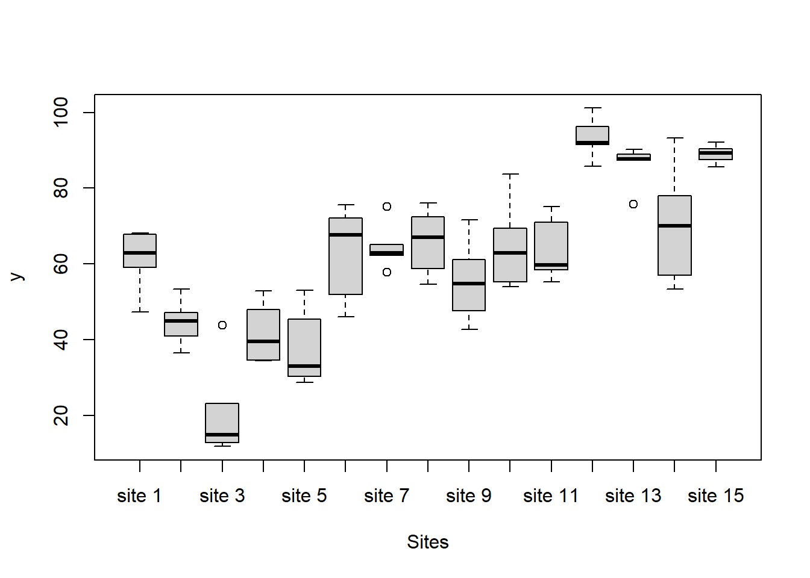

![]()
fact_anova_tableNested Anova (JAGS)
Quarto
R
Academia
Software
Statistics
Abstract
This tutorial will focus on the use of Bayesian estimation to fit simple linear regression models …
Keywords
Software, Statistics, Stan
This tutorial will focus on the use of Bayesian estimation to fit simple linear regression models. BUGS (Bayesian inference Using Gibbs Sampling) is an algorithm and supporting language (resembling R) dedicated to performing the Gibbs sampling implementation of Markov Chain Monte Carlo (MCMC) method. Dialects of the BUGS language are implemented within three main projects:
OpenBUGS - written in component pascal.
JAGS - (Just Another Gibbs Sampler) - written in
C++.STAN - a dedicated Bayesian modelling framework written in
C++and implementing Hamiltonian MCMC samplers.
Whilst the above programs can be used stand-alone, they do offer the rich data pre-processing and graphical capabilities of R, and thus, they are best accessed from within R itself. As such there are multiple packages devoted to interfacing with the various software implementations:
R2OpenBUGS - interfaces with
OpenBUGSR2jags - interfaces with
JAGSrstan - interfaces with
STAN
This tutorial will demonstrate how to fit models in JAGS (Plummer (2004)) using the package R2jags (Su et al. (2015)) as interface, which also requires to load some other packages.
Overview
Introduction
When single sampling units are selected amongst highly heterogeneous conditions, it is unlikely that these single units will adequately represent the populations and repeated sampling is likely to yield very different outcomes. For example, if we were investigating the impacts of fuel reduction burning across a highly heterogeneous landscape, our ability to replicate adequately might be limited by the number of burn sites available.
Alternatively, sub-replicates within each of the sampling units (e.g. sites) can be collected (and averaged) so as to provided better representatives for each of the units and ultimately reduce the unexplained variability of the test of treatments. In essence, the sub-replicates are the replicates of an additional nested factor whose levels are nested within the main treatment factor. A nested factor refers to a factor whose levels are unique within each level of the factor it is nested within and each level is only represented once. For example, the fuel reduction burn study design could consist of three burnt sites and three un-burnt (control) sites each containing four quadrats (replicates of site and sub-replicates of the burn treatment). Each site represents a unique level of a random factor (any given site cannot be both burnt and un-burnt) that is nested within the fire treatment (burned or not).
A nested design can be thought of as a hierarchical arrangement of factors (hence the alternative name hierarchical designs) whereby a treatment is progressively sub-replicated. As an additional example, imagine an experiment designed to comparing the leaf toughness of a number of tree species. Working down the hierarchy, five individual trees were randomly selected within (nested within) each species, three branches were randomly selected within each tree, two leaves were randomly selected within each branch and the force required to shear the leaf material in half (transversely) was measured in four random locations along the leaf. Clearly any given leaf can only be from a single branch, tree and species. Each level of sub-replication is introduced to further reduce the amount of unexplained variation and thereby increasing the power of the test for the main treatment effect. Additionally, it is possible to investigate which scale has the greatest (or least, etc) degree of variability - the level of the species, individual tree, branch, leaf, leaf region etc.
Nested factors are typically random factors, of which the levels are randomly selected to represent all possible levels (e.g. sites). When the main treatment effect (often referred to as Factor A) is a fixed factor, such designs are referred to as a mixed model nested ANOVA, whereas when Factor A is random, the design is referred to as a Model II nested ANOVA.
Fixed nested factors are also possible. For example, specific dates (corresponding to particular times during a season) could be nested within season. When all factors are fixed, the design is referred to as a Model I mixed model.
Fully nested designs (the topic of this chapter) differ from other multi-factor designs in that all factors within (below) the main treatment factor are nested and thus interactions are un-replicated and cannot be tested. Indeed, interaction effects (interaction between Factor A and site) are assumed to be zero.
Linear models (frequentist)
The linear models for two and three factor nested design are:
\[ y_{ijk} = \mu + \alpha_i + \beta_{j(i)} + \epsilon_{ijk}, \]
\[ y_{ijkl} = \mu + \alpha_i + \beta_{j(i)} + gamma_{k(j(i))} + \epsilon_{ijkl}, \]
where \(\mu\) is the overall mean, \(\alpha\) is the effect of Factor A, \(\beta\) is the effect of Factor B, \(\gamma\) is the effect of Factor C and \(\epsilon\) is the random unexplained or residual component.
Linear models (Bayesian)
So called “random effects” are modelled differently from “fixed effects” in that rather than estimate their individual effects, we instead estimate the variability due to these “random effects”. Since technically all variables in a Bayesian framework are random, some prefer to use the terms ‘fixed effects’ and ‘varying effects’. As random factors typically represent “random” selections of levels (such as a set of randomly selected sites), incorporated in order to account for the dependency structure (observations within sites are more likely to be correlated to one another - not strickly independent) to the data, we are not overly interested in the individual differences between levels of the ‘varying’ (random) factor. Instead (in addition to imposing a separate correlation structure within each nest), we want to know how much variability is attributed to this level of the design. The linear models for two and three factor nested design are:
\[ y_{ijk} = \mu + \alpha_i + \beta_{j(i)} + \epsilon_{ijk}, \;\;\; \epsilon_{ijk} \sim N(0, \sigma^2), \;\;\; \beta_{j(i)} \sim N(0, \sigma^2_{B}) \]
\[ y_{ijkl} = \mu + \alpha_i + \beta_{j(i)} + \gamma_{k(j(i))} + \epsilon_{ijkl}, \;\;\; \epsilon_{ijkl} \sim N(0, \sigma^2), \;\;\; \beta_{j(i)} \sim N(0, \sigma^2_{B}) \;\;\; \gamma_{k(j(i))} \sim N(0, \sigma^2_C) \]
where \(\mu\) is the overall mean, \(\alpha\) is the effect of Factor A, \(\beta\) is the variability of Factor B (nested within Factor A), \(\gamma\) is the variability of Factor C (nested within Factor B) and \(\epsilon\) is the random unexplained or residual component that is assumed to be normally distributed with a mean of zero and a constant amount of standard deviation (\(\sigma^2\)). The subscripts are iterators. For example, the \(i\) represents the number of effects to be estimated for Factor A. Thus the first formula can be read as the \(k\)-th observation of \(y\) is drawn from a normal distribution (with a specific level of variability) and mean proposed to be determined by a base mean (\(\mu\) - mean of the first treatment across all nests) plus the effect of the \(i\)-th treatment effect plus the variabilitythe model proposes that, given a base mean (\(\mu\)) and knowing the effect of the \(i\)-th treatment (factor A) and which of the \(j\)-th nests within the treatment the \(k\)-th observation from Block \(j\) (factor B) within treatment effect.
Null hypotheses
Separate null hypotheses are associated with each of the factors, however, nested factors are typically only added to absorb some of the unexplained variability and thus, specific hypotheses tests associated with nested factors are of lesser biological importance. Hence, rather than estimate the effects of random effects, we instead estimate how much variability they contribute.
Factor A: the main treatment effect (fixed)
\(H_0(A): \mu_1=\mu_2=\ldots=\mu_i=\mu\) (the population group means are all equal). That is, that the mean of population \(1\) is equal to that of population \(2\) and so on, and thus all population means are equal to one another - no effect of the factor on the response. If the effect of the \(i\)-th group is the difference between the \(i\)-th group mean and the mean of the first group (\(\alpha_i=\mu_i-\mu_1\)) then the \(H_0\) can alternatively be written as:
\(H_0(A) : \alpha_1=\alpha_2=\ldots=\alpha_i=0\) (the effect of each group equals zero). If one or more of the \(\alpha_i\) are different from zero (the response mean for this treatment differs from the overall response mean), there is evidence that the null hypothesis is not true indicating that the factor does affect the response variable.
Factor A: the main treatment effect (random)
- \(H_0(A) : \sigma^2_{\alpha}=0\) (population variance equals zero). There is no added variance due to all possible levels of A.
Factor B: the nested effect (random)
- \(H_0(B) : \sigma^2_{\beta}=0\) (population variance equals zero). There is no added variance due to all possible levels of B within the (set or all possible) levels of A.
Factor B: the nested effect (fixed)
\(H_0(B): \mu_{1(1)}=\mu_{2(1)}=\ldots=\mu_{j(i)}=\mu\) (the population group means of B (within A) are all equal).
\(H_0(B): \beta_{1(1)}=\beta_{2(1)}=\ldots=\beta_{j(i)}=0\) (the effect of each chosen B group equals zero).
Analysis of variance
Analysis of variance sequentially partitions the total variability in the response variable into components explained by each of the factors (starting with the factors lowest down in the hierarchy - the most deeply nested) and the components unexplained by each factor. Explained variability is calculated by subtracting the amount unexplained by the factor from the amount unexplained by a reduced model that does not contain the factor. When the null hypothesis for a factor is true (no effect or added variability), the ratio of explained and unexplained components for that factor (F-ratio) should follow a theoretical F-distribution with an expected value less than 1. The appropriate unexplained residuals and therefore the appropriate F-ratios for each factor differ according to the different null hypotheses associated with different combinations of fixed and random factors in a nested linear model (see Table below).
The corresponding R syntax is given below.
#A fixed/random, B random (balanced)
summary(aov(y~A+Error(B), data))
VarCorr(lme(y~A,random=1|B, data))
#A fixed/random, B random (unbalanced)
anova(lme(y~A,random=1|B, data), type='marginal')
#A fixed/random, B fixed(balanced)
summary(aov(y~A+B, data))
#A fixed/random, B fixed (unbalanced)
contrasts(data$B) <- contr.sum
Anova(aov(y~A/B, data), type='III')Variance components
As previously alluded to, it can often be useful to determine the relative contribution (to explaining the unexplained variability) of each of the factors as this provides insights into the variability at each different scales. These contributions are known as Variance components and are estimates of the added variances due to each of the factors. For consistency with leading texts on this topic, I have included estimated variance components for various balanced nested ANOVA designs in the above table. However, variance components based on a modified version of the maximum likelihood iterative model fitting procedure (REML) is generally recommended as this accommodates both balanced and unbalanced designs. While there are no numerical differences in the calculations of variance components for fixed and random factors, fixed factors are interpreted very differently and arguably have little clinical meaning (other to infer relative contribution). For fixed factors, variance components estimate the variance between the means of the specific populations that are represented by the selected levels of the factor and therefore represent somewhat arbitrary and artificial populations. For random factors, variance components estimate the variance between means of all possible populations that could have been selected and thus represents the true population variance.
Assumptions
An F-distribution represents the relative frequencies of all the possible F-ratio’s when a given null hypothesis is true and certain assumptions about the residuals (denominator in the F-ratio calculation) hold. Consequently, it is also important that diagnostics associated with a particular hypothesis test reflect the denominator for the appropriate F-ratio. For example, when testing the null hypothesis that there is no effect of Factor A (\(H_0(A):\alpha_i=0\)) in a mixed nested ANOVA, the means of each level of Factor B are used as the replicates of Factor A. As with single factor anova, hypothesis testing for nested ANOVA assumes the residuals are:
normally distributed. Factors higher up in the hierarchy of a nested model are based on means (or means of means) of lower factors and thus the Central Limit Theory would predict that normality will usually be satisfied for the higher level factors. Nevertheless, boxplots using the appropriate scale of replication should be used to explore normality. Scale transformations are often useful.
equally varied. Boxplots and plots of means against variance (using the appropriate scale of replication) should be used to explore the spread of values. Residual plots should reveal no patterns. Scale transformations are often useful.
independent of one another - this requires special consideration so as to ensure that the scale at which sub-replicates are measured is still great enough to enable observations to be independent.
Unbalanced nested designs
Designs that incorporate fixed and random factors (either nested or factorial), involve F-ratio calculations in which the denominators are themselves random factors other than the overall residuals. Many statisticians argue that when such denominators are themselves not statistically significant (at the \(0.25\) level), there are substantial power benefits from pooling together successive non-significant denominator terms. Thus an F-ratio for a particular factor might be recalculated after pooling together its original denominator with its denominators denominator and so on. The conservative \(0.25\) is used instead of the usual 0.05 to reduce further the likelihood of Type II errors (falsely concluding an effect is non-significant - that might result from insufficient power).
For a simple completely balanced nested ANOVA, it is possible to pool together (calculate their mean) each of the sub-replicates within each nest (site) and then perform single factor ANOVA on those aggregates. Indeed, for a balanced design, the estimates and hypothesis for Factor A will be identical to that produced via nested ANOVA. However, if there are an unequal number of sub-replicates within each nest, then the single factor ANOVA will be less powerful that a proper nested ANOVA. Unbalanced designs are those designs in which sample (subsample) sizes for each level of one or more factors differ. These situations are relatively common in biological research, however such imbalance has some important implications for nested designs.
Firstly, hypothesis tests are more robust to the assumptions of normality and equal variance when the design is balanced. Secondly (and arguably, more importantly), the model contrasts are not orthogonal (independent) and the sums of squares component attributed to each of the model terms cannot be calculated by simple additive partitioning of the total sums of squares. In such situations, exact F-ratios cannot be constructed (at least in theory), variance components calculations are more complicated and significance tests cannot be computed. The denominator MS in an F-ratio is determined by examining the expected value of the mean squares of each term in a model. Unequal sample sizes result in expected means squares for which there are no obvious logical comparators that enable the impact of an individual model term to be isolated. The severity of this issue depends on which scale of the sub-sampling hierarchy the unbalance(s) occurs as well whether the unbalance occurs in the replication of a fixed or random factor. For example, whilst unequal levels of the first nesting factor (e.g. unequal number of burn vs un-burnt sites) has no effect on F-ratio construction or hypothesis testing for the top level factor (irrespective of whether either of the factors are fixed or random), unequal sub-sampling (replication) at the level of a random (but not fixed) nesting factor will impact on the ability to construct F-ratios and variance components of all terms above it in the hierarchy. There are a number of alternative ways of dealing with unbalanced nested designs. All alternatives assume that the imbalance is not a direct result of the treatments themselves. Such outcomes are more appropriately analysed by modelling the counts of surviving observations via frequency analysis.
- Split the analysis up into separate smaller simple ANOVA’s each using the means of the nesting factor to reflect the appropriate scale of replication. As the resulting sums of squares components are thereby based on an aggregated dataset the analyses then inherit the procedures and requirements of single ANOVA.
- Adopt mixed-modelling techniques.
We note that, in a Bayesian framework, issues of design balance essentially evaporate.
Linear mixed effects models
Although the term “mixed-effects” can be used to refer to any design that incorporates both fixed and random predictors, its use is more commonly restricted to designs in which factors are nested or grouped within other factors. Typical examples include nested, longitudinal (measurements repeated over time) data, repeated measures and blocking designs. Furthermore, rather than basing parameter estimations on observed and expected mean squares or error strata (as outline above), mixed-effects models estimate parameters via maximum likelihood (ML) or residual maximum likelihood (REML). In so doing, mixed-effects models more appropriately handle estimation of parameters, effects and variance components of unbalanced designs (particularly for random effects). Resulting fitted (or expected) values of each level of a factor (for example, the expected population site means) are referred to as Best Linear Unbiased Predictors (BLUP’s). As an acknowledgement that most estimated site means will be more extreme than the underlying true population means they estimate (based on the principle that smaller sample sizes result in greater chances of more extreme observations and that nested sub-replicates are also likely to be highly intercorrelated), BLUP’s are less spread from the overall mean than are simple site means. In addition, mixed-effects models naturally model the “within-block” correlation structure that complicates many longitudinal designs.
Whilst the basic concepts of mixed-effects models have been around for a long time, recent computing advances and adoptions have greatly boosted the popularity of these procedures. Linear mixed effects models are currently at the forefront of statistical development, and as such, are very much a work in progress - both in theory and in practice. Recent developments have seen a further shift away from the traditional practices associated with degrees of freedom, probability distribution and p-value calculations. The traditional approach to inference testing is to compare the fit of an alternative (full) model to a null (reduced) model (via an F-ratio). When assumptions of normality and homogeneity of variance apply, the degrees of freedom are easily computed and the F-ratio has an exact F-distribution to which it can be compared. However, this approach introduces two additional problematic assumptions when estimating fixed effects in a mixed effects model. Firstly, when estimating the effects of one factor, the parameter estimates associated with other factor(s) are assumed to be the true values of those parameters (not estimates). Whilst this assumption is reasonable when all factors are fixed, as random factors are selected such that they represent one possible set of levels drawn from an entire population of possible levels for the random factor, it is unlikely that the associated parameter estimates accurately reflect the true values. Consequently, there is not necessarily an appropriate F-distribution. Furthermore, determining the appropriate degrees of freedom (nominally, the number of independent observations on which estimates are based) for models that incorporate a hierarchical structure is only possible under very specific circumstances (such as completely balanced designs). Degrees of freedom is a somewhat arbitrary defined concept used primarily to select a theoretical probability distribution on which a statistic can be compared. Arguably, however, it is a concept that is overly simplistic for complex hierarchical designs. Most statistical applications continue to provide the “approximate” solutions (as did earlier versions within R). However, R linear mixed effects development leaders argue strenuously that given the above shortcomings, such approximations are variably inappropriate and are thus omitted.
Markov chain Monte Carlo (MCMC) sampling methods provide a Bayesian-like alternative for inference testing. Markov chains use the mixed model parameter estimates to generate posterior probability distributions of each parameter from which Monte Carlo sampling methods draw a large set of parameter samples. These parameter samples can then be used to calculate highest posterior density (HPD) intervals (also known as Bayesian credible intervals). Such intervals indicate the interval in which there is a specified probability (typically \(95\)%) that the true population parameter lies. Furthermore, whilst technically against the spirit of the Bayesian philosophy, it is also possible to generate P values on which to base inferences.
Data generation
Imagine we has designed an experiment in which we intend to measure a response (\(y\)) to one of treatments (three levels; “a1”, “a2” and “a3”). The treatments occur at a spatial scale (over an area) that far exceeds the logistical scale of sampling units (it would take too long to sample at the scale at which the treatments were applied). The treatments occurred at the scale of hectares whereas it was only feasible to sample y using 1m quadrats. Given that the treatments were naturally occurring (such as soil type), it was not possible to have more than five sites of each treatment type, yet prior experience suggested that the sites in which you intended to sample were very uneven and patchy with respect to \(y\). In an attempt to account for this inter-site variability (and thus maximize the power of the test for the effect of treatment, you decided to employ a nested design in which 10 quadrats were randomly located within each of the five replicate sites per three treatments. As this section is mainly about the generation of artificial data (and not specifically about what to do with the data), understanding the actual details are optional and can be safely skipped.
library(plyr)
set.seed(123)
nTreat <- 3
nSites <- 15
nSitesPerTreat <- nSites/nTreat
nQuads <- 10
site.sigma <- 12
sigma <- 5
n <- nSites * nQuads
sites <- gl(n=nSites,k=nQuads, lab=paste0('S',1:nSites))
A <- gl(nTreat, nSitesPerTreat*nQuads, n, labels=c('a1','a2','a3'))
a.means <- c(40,70,80)
## the site means (treatment effects) are drawn from normal distributions
## with means of 40, 70 and 80 and standard deviations of 12
A.effects <- rnorm(nSites, rep(a.means,each=nSitesPerTreat),site.sigma)
#A.effects <- a.means %*% t(model.matrix(~A, data.frame(A=gl(nTreat,nSitesPerTreat,nSites))))+rnorm(nSites,0,site.sigma)
Xmat <- model.matrix(~sites -1)
lin.pred <- Xmat %*% c(A.effects)
## the quadrat observations (within sites) are drawn from
## normal distributions with means according to the site means
## and standard deviations of 5
y <- rnorm(n,lin.pred,sigma)
data.nest <- data.frame(y=y, A=A, Sites=sites,Quads=1:length(y))
head(data.nest) #print out the first six rows of the data setNA y A Sites Quads
NA 1 42.20886 a1 S1 1
NA 2 35.76354 a1 S1 2
NA 3 23.44121 a1 S1 3
NA 4 36.78107 a1 S1 4
NA 5 30.91034 a1 S1 5
NA 6 27.93517 a1 S1 6library(ggplot2)
ggplot(data.nest, aes(y=y, x=1)) + geom_boxplot() + facet_grid(.~Sites)
Exploratory data analysis
Normality and Homogeneity of variance
#Effects of treatment
boxplot(y~A, ddply(data.nest, ~A+Sites,numcolwise(mean, na.rm=T)))
#Site effects
boxplot(y~Sites, ddply(data.nest, ~A+Sites+Quads,numcolwise(mean, na.rm=T)))
## with ggplot2
ggplot(ddply(data.nest, ~A+Sites,numcolwise(mean, na.rm=T)), aes(y=y, x=A)) +
geom_boxplot()
Conclusions:
there is no evidence that the response variable is consistently non-normal across all populations - each boxplot is approximately symmetrical.
there is no evidence that variance (as estimated by the height of the boxplots) differs between the five populations. More importantly, there is no evidence of a relationship between mean and variance - the height of boxplots does not increase with increasing position along the y-axis. Hence it there is no evidence of non-homogeneity.
Obvious violations could be addressed either by:
- transform the scale of the response variables (to address normality, etc). Note transformations should be applied to the entire response variable (not just those populations that are skewed).
Model fitting
For non-hierarchical linear models, uniform priors on variance (standard deviation) parameters seem to work reasonably well. Gelman et al. (2006) warns that the use of the inverse-gamma family of non-informative priors are very sensitive to ϵ particularly when variance is close to zero and this may lead to unintentionally informative priors. When the number of groups (treatments or varying/random effects) is large (more than \(5\)), Gelman et al. (2006) advocated the use of either uniform or half-cauchy priors. Yet when the number of groups is low, Gelman et al. (2006) indicates that uniform priors have a tendency to result in inflated variance estimates. Consequently, half-Cauchy priors are generally recommended for variances.
Full parameterisation
\[ y_{ijk} \sim N(\mu_{ij}, \sigma^2), \;\;\; \mu_{ij}=\alpha_0 + \alpha_i + \beta_{j(i)}, \]
where \(\beta_{ij)} \sim N(0, \sigma^2_B)\), \(\alpha_0, \alpha_i \sim N(0, 1000000)\), and \(\sigma^2, \sigma^2_B \sim \text{Cauchy(0, 25)}\). The full parameterisation, shows the effects parameterisation in which there is an intercept (\(\alpha_0\)) and two treatment effects (\(\alpha_i\), where \(i\) is \(1,2\)).
Matrix parameterisation
\[ y_{ijk} \sim N(\mu_{ij}, \sigma^2), \;\;\; \mu_{ij}=\boldsymbol \alpha \boldsymbol X + \beta_{j(i)}, \]
where \(\beta_{ij} \sim N(0, \sigma^2_B)\), \(\boldsymbol \alpha \sim MVN(0, 1000000)\), and \(\sigma^2, \sigma^2_B \sim \text{Cauchy(0, 25)}\). The full parameterisation, shows the effects parameterisation in which there is an intercept (\(\alpha_0\)) and two treatment effects (\(\alpha_i\), where \(i\) is \(1,2\)). The matrix parameterisation is a compressed notation, In this parameterisation, there are three alpha parameters (one representing the mean of treatment a1, and the other two representing the treatment effects (differences between a2 and a1 and a3 and a1). In generating priors for each of these three alpha parameters, we could loop through each and define a non-informative normal prior to each (as in the Full parameterisation version). However, it turns out that it is more efficient (in terms of mixing and thus the number of necessary iterations) to define the priors from a multivariate normal distribution. This has as many means as there are parameters to estimate (\(3\)) and a \(3\times3\) matrix of zeros and \(100\) in the diagonals.
\[ \boldsymbol \mu = \begin{bmatrix} 0 \\ 0 \\ 0 \end{bmatrix}, \;\;\; \sigma^2 \sim \begin{bmatrix} 1000000 & 0 & 0 \\ 0 & 1000000 & 0 \\ 0 & 0 & 1000000 \end{bmatrix}. \]
Hierarchical parameterisation
\[ y_{ijk} \sim N(\beta_{i(j)}, \sigma^2), \;\;\; \beta_{i(j)}\sim N(\mu_i, \sigma^2_B), \]
where \(\mu_i = \boldsymbol \alpha \boldsymbol X\), \(\alpha_i \sim N(0, 1000000)\), and \(\sigma^2, \sigma^2_B \sim \text{Cauchy(0, 25)}\). In the heirarchical parameterisation, we are indicating two residual layers - one representing the variability in the observed data between individual observations (within sites) and the second representing the variability between site means (within the three treatments).
Full effect parameterisation
modelString="
model {
#Likelihood
for (i in 1:n) {
y[i]~dnorm(mu[i],tau)
mu[i] <- alpha0 + alpha[A[i]] + beta[site[i]]
}
#Priors
alpha0 ~ dnorm(0, 1.0E-6)
alpha[1] <- 0
for (i in 2:nA) {
alpha[i] ~ dnorm(0, 1.0E-6) #prior
}
for (i in 1:nSite) {
beta[i] ~ dnorm(0, tau.B) #prior
}
tau <- pow(sigma,-2)
sigma <-z/sqrt(chSq)
z ~ dnorm(0, .0016)I(0,)
chSq ~ dgamma(0.5, 0.5)
tau.B <- pow(sigma.B,-2)
sigma.B <-z/sqrt(chSq.B)
z.B ~ dnorm(0, .0016)I(0,)
chSq.B ~ dgamma(0.5, 0.5)
}
"
## write the model to a text file
writeLines(modelString, con = "fullModel.txt")Arrange the data as a list (as required by JAGS). As input, JAGS will need to be supplied with: the response variable, the predictor matrix, the number of predictors, the total number of observed items. This all needs to be contained within a list object. We will create two data lists, one for each of the hypotheses.
data.nest.list <- with(data.nest,
list(y=y,
site=as.numeric(Sites),
A=as.numeric(A),
n=nrow(data.nest),
nSite=length(levels(Sites)),
nA = length(levels(A))
)
)Define the nodes (parameters and derivatives) to monitor and the chain parameters.
params <- c("alpha0","alpha","sigma","sigma.B")
adaptSteps = 1000
burnInSteps = 3000
nChains = 2
numSavedSteps = 3000
thinSteps = 1
nIter = burnInSteps+ceiling((numSavedSteps * thinSteps)/nChains)Start the JAGS model (check the model, load data into the model, specify the number of chains and compile the model). Load the R2jags package.
library(R2jags)Now run the JAGS code via the R2jags interface.
data.nest.r2jags.f <- jags(data = data.nest.list, inits = NULL, parameters.to.save = params,
model.file = "fullModel.txt", n.chains = nChains, n.iter = nIter,
n.burnin = burnInSteps, n.thin = thinSteps)NA Compiling model graph
NA Resolving undeclared variables
NA Allocating nodes
NA Graph information:
NA Observed stochastic nodes: 150
NA Unobserved stochastic nodes: 22
NA Total graph size: 502
NA
NA Initializing modelprint(data.nest.r2jags.f)NA Inference for Bugs model at "fullModel.txt", fit using jags,
NA 2 chains, each with 4500 iterations (first 3000 discarded)
NA n.sims = 3000 iterations saved
NA mu.vect sd.vect 2.5% 25% 50% 75% 97.5% Rhat n.eff
NA alpha[1] 0.000 0.000 0.000 0.000 0.000 0.000 0.000 1.000 1
NA alpha[2] 27.388 7.149 13.085 22.881 27.312 31.980 41.230 1.001 3000
NA alpha[3] 40.839 7.083 26.936 36.251 40.800 45.412 55.107 1.002 3000
NA alpha0 42.325 4.978 32.452 39.136 42.215 45.422 52.310 1.002 3000
NA sigma 5.069 0.307 4.530 4.851 5.051 5.265 5.722 1.002 3000
NA sigma.B 10.990 2.527 7.168 9.260 10.656 12.306 17.136 1.009 190
NA deviance 909.635 5.937 899.898 905.400 908.952 913.145 923.175 1.001 3000
NA
NA For each parameter, n.eff is a crude measure of effective sample size,
NA and Rhat is the potential scale reduction factor (at convergence, Rhat=1).
NA
NA DIC info (using the rule, pD = var(deviance)/2)
NA pD = 17.6 and DIC = 927.3
NA DIC is an estimate of expected predictive error (lower deviance is better).Matrix parameterisation
modelString2="
model {
#Likelihood
for (i in 1:n) {
y[i]~dnorm(mu[i],tau)
mu[i] <- inprod(alpha[],X[i,]) + inprod(beta[], Z[i,])
}
#Priors
alpha ~ dmnorm(a0,A0)
for (i in 1:nZ) {
beta[i] ~ dnorm(0, tau.B) #prior
}
tau <- pow(sigma,-2)
sigma <-z/sqrt(chSq)
z ~ dnorm(0, .0016)I(0,)
chSq ~ dgamma(0.5, 0.5)
tau.B <- pow(sigma.B,-2)
sigma.B <-z/sqrt(chSq.B)
z.B ~ dnorm(0, .0016)I(0,)
chSq.B ~ dgamma(0.5, 0.5)
}
"
## write the model to a text file
writeLines(modelString2, con = "matrixModel.txt")Arrange the data as a list (as required by JAGS). As input, JAGS will need to be supplied with: the response variable, the predictor matrix, the number of predictors, the total number of observed items. This all needs to be contained within a list object. We will create two data lists, one for each of the hypotheses.
A.Xmat <- model.matrix(~A,data.nest)
Zmat <- model.matrix(~-1+Sites, data.nest)
data.nest.list <- with(data.nest,
list(y=y,
X=A.Xmat,
n=nrow(data.nest),
Z=Zmat, nZ=ncol(Zmat),
a0=rep(0,3), A0=diag(3)
)
)Define the nodes (parameters and derivatives) to monitor and the chain parameters.
params <- c("alpha","sigma","sigma.B",'beta')
burnInSteps = 3000
nChains = 2
numSavedSteps = 3000
thinSteps = 1
nIter = burnInSteps+ceiling((numSavedSteps * thinSteps)/nChains)Now run the JAGS code via the R2jags interface.
data.nest.r2jags.m <- jags(data = data.nest.list, inits = NULL, parameters.to.save = params,
model.file = "matrixModel.txt", n.chains = nChains, n.iter = nIter,
n.burnin = burnInSteps, n.thin = thinSteps)NA Compiling model graph
NA Resolving undeclared variables
NA Allocating nodes
NA Graph information:
NA Observed stochastic nodes: 150
NA Unobserved stochastic nodes: 20
NA Total graph size: 3231
NA
NA Initializing modelprint(data.nest.r2jags.m)NA Inference for Bugs model at "matrixModel.txt", fit using jags,
NA 2 chains, each with 4500 iterations (first 3000 discarded)
NA n.sims = 3000 iterations saved
NA mu.vect sd.vect 2.5% 25% 50% 75% 97.5% Rhat n.eff
NA alpha[1] 0.201 1.016 -1.750 -0.474 0.215 0.872 2.161 1.001 3000
NA alpha[2] 0.082 0.972 -1.835 -0.585 0.092 0.730 1.954 1.003 2000
NA alpha[3] 0.077 1.005 -1.867 -0.608 0.075 0.771 2.055 1.001 3000
NA beta[1] 31.532 1.871 27.942 30.237 31.536 32.794 35.248 1.001 3000
NA beta[2] 38.069 1.911 34.289 36.788 38.125 39.343 41.817 1.001 3000
NA beta[3] 59.346 1.872 55.692 58.089 59.346 60.579 63.088 1.001 3000
NA beta[4] 40.644 1.936 36.885 39.378 40.659 41.960 44.321 1.002 1400
NA beta[5] 40.506 1.855 36.802 39.248 40.492 41.750 44.199 1.001 3000
NA beta[6] 90.495 2.131 86.451 89.013 90.489 91.970 94.602 1.001 3000
NA beta[7] 75.252 2.114 71.007 73.850 75.238 76.681 79.322 1.002 1200
NA beta[8] 57.061 2.180 52.888 55.574 57.032 58.568 61.289 1.001 2400
NA beta[9] 61.336 2.171 57.214 59.855 61.372 62.822 65.415 1.001 3000
NA beta[10] 62.816 2.159 58.580 61.353 62.774 64.268 67.144 1.001 3000
NA beta[11] 93.379 2.134 89.192 91.945 93.374 94.750 97.533 1.001 3000
NA beta[12] 83.011 2.161 78.822 81.508 83.024 84.486 87.245 1.001 3000
NA beta[13] 82.765 2.202 78.398 81.292 82.774 84.252 87.054 1.001 3000
NA beta[14] 81.140 2.165 76.775 79.675 81.185 82.598 85.236 1.001 3000
NA beta[15] 74.041 2.119 70.008 72.616 74.027 75.493 78.245 1.001 3000
NA sigma 5.058 0.306 4.499 4.844 5.049 5.255 5.710 1.002 1200
NA sigma.B 68.791 13.133 48.825 59.338 66.869 75.995 98.963 1.002 3000
NA deviance 909.431 6.235 899.560 905.043 908.621 913.008 923.865 1.003 810
NA
NA For each parameter, n.eff is a crude measure of effective sample size,
NA and Rhat is the potential scale reduction factor (at convergence, Rhat=1).
NA
NA DIC info (using the rule, pD = var(deviance)/2)
NA pD = 19.4 and DIC = 928.8
NA DIC is an estimate of expected predictive error (lower deviance is better).Hierarchical parameterisation
modelString3="
model {
#Likelihood (esimating site means (gamma.site)
for (i in 1:n) {
y[i]~dnorm(quad.means[i],tau)
quad.means[i] <- gamma.site[site[i]]
}
for (i in 1:s) {
gamma.site[i] ~ dnorm(site.means[i], tau.site)
site.means[i] <- inprod(beta[],A.Xmat[i,])
}
#Priors
for (i in 1:a) {
beta[i] ~ dnorm(0, 1.0E-6) #prior
}
tau <- pow(sigma,-2)
sigma <-z/sqrt(chSq)
z ~ dnorm(0, .0016)I(0,)
chSq ~ dgamma(0.5, 0.5)
tau.B <- pow(sigma.B,-2)
sigma.B <-z/sqrt(chSq.B)
z.B ~ dnorm(0, .0016)I(0,)
chSq.B ~ dgamma(0.5, 0.5)
tau.site <- pow(sigma.site,-2)
sigma.site <-z/sqrt(chSq.site)
z.site ~ dnorm(0, .0016)I(0,)
chSq.site ~ dgamma(0.5, 0.5)
}
"
## write the model to a text file
writeLines(modelString3, con = "hierarchicalModel.txt")Arrange the data as a list (as required by JAGS). As input, JAGS will need to be supplied with: the response variable, the predictor matrix, the number of predictors, the total number of observed items. This all needs to be contained within a list object. We will create two data lists, one for each of the hypotheses.
A.Xmat <- model.matrix(~A,ddply(data.nest,~Sites,catcolwise(unique)))
data.nest.list <- with(data.nest,
list(y=y,
site=Sites,
A.Xmat= A.Xmat,
n=nrow(data.nest),
s=length(levels(Sites)),
a = ncol(A.Xmat)
)
)Define the nodes (parameters and derivatives) to monitor and the chain parameters.
params <- c("beta","sigma","sigma.site")
burnInSteps = 3000
nChains = 2
numSavedSteps = 3000
thinSteps = 1
nIter = burnInSteps+ceiling((numSavedSteps * thinSteps)/nChains)Now run the JAGS code via the R2jags interface.
data.nest.r2jags.h <- jags(data = data.nest.list, inits = NULL, parameters.to.save = params,
model.file = "hierarchicalModel.txt", n.chains = nChains, n.iter = nIter,
n.burnin = burnInSteps, n.thin = thinSteps)NA Compiling model graph
NA Resolving undeclared variables
NA Allocating nodes
NA Graph information:
NA Observed stochastic nodes: 150
NA Unobserved stochastic nodes: 24
NA Total graph size: 406
NA
NA Initializing modelprint(data.nest.r2jags.h)NA Inference for Bugs model at "hierarchicalModel.txt", fit using jags,
NA 2 chains, each with 4500 iterations (first 3000 discarded)
NA n.sims = 3000 iterations saved
NA mu.vect sd.vect 2.5% 25% 50% 75% 97.5% Rhat n.eff
NA beta[1] 42.139 4.991 32.186 38.913 42.226 45.346 51.751 1.001 3000
NA beta[2] 27.611 6.859 13.692 23.437 27.617 31.993 41.118 1.001 3000
NA beta[3] 41.048 7.032 26.813 36.805 41.067 45.316 55.566 1.002 1200
NA sigma 5.058 0.315 4.483 4.841 5.036 5.257 5.763 1.001 3000
NA sigma.site 10.889 2.386 7.235 9.269 10.578 12.125 16.695 1.005 3000
NA deviance 909.557 6.168 899.915 905.154 908.708 913.153 923.686 1.001 1900
NA
NA For each parameter, n.eff is a crude measure of effective sample size,
NA and Rhat is the potential scale reduction factor (at convergence, Rhat=1).
NA
NA DIC info (using the rule, pD = var(deviance)/2)
NA pD = 19.0 and DIC = 928.6
NA DIC is an estimate of expected predictive error (lower deviance is better).If you want to include finite-population standard deviations in the model you can use the following code.
modelString4="
model {
#Likelihood (esimating site means (gamma.site)
for (i in 1:n) {
y[i]~dnorm(quad.means[i],tau)
quad.means[i] <- gamma.site[site[i]]
y.err[i]<- quad.means[i]-y[i]
}
for (i in 1:s) {
gamma.site[i] ~ dnorm(site.means[i], tau.site)
site.means[i] <- inprod(beta[],A.Xmat[i,])
site.err[i] <- site.means[i] - gamma.site[i]
}
#Priors
for (i in 1:a) {
beta[i] ~ dnorm(0, 1.0E-6) #prior
}
tau <- pow(sigma,-2)
sigma <-z/sqrt(chSq)
z ~ dnorm(0, .0016)I(0,)
chSq ~ dgamma(0.5, 0.5)
tau.site <- pow(sigma.site,-2)
sigma.site <-z/sqrt(chSq.site)
z.site ~ dnorm(0, .0016)I(0,)
chSq.site ~ dgamma(0.5, 0.5)
sd.y <- sd(y.err)
sd.site <- sd(site.err)
sd.A <- sd(beta)
}
"
## write the model to a text file
writeLines(modelString4, con = "SDModel.txt")
#data list
A.Xmat <- model.matrix(~A,ddply(data.nest,~Sites,catcolwise(unique)))
data.nest.list <- with(data.nest,
list(y=y,
site=Sites,
A.Xmat= A.Xmat,
n=nrow(data.nest),
s=length(levels(Sites)),
a = ncol(A.Xmat)
)
)
#parameters and chain details
params <- c("beta","sigma","sd.y",'sd.site','sd.A','sigma.site')
adaptSteps = 1000
burnInSteps = 3000
nChains = 2
numSavedSteps = 3000
thinSteps = 1
nIter = burnInSteps+ceiling((numSavedSteps * thinSteps)/nChains)
data.nest.r2jags.SD <- jags(data = data.nest.list, inits = NULL, parameters.to.save = params,
model.file = "SDModel.txt", n.chains = nChains, n.iter = nIter,
n.burnin = burnInSteps, n.thin = thinSteps)NA Compiling model graph
NA Resolving undeclared variables
NA Allocating nodes
NA Graph information:
NA Observed stochastic nodes: 150
NA Unobserved stochastic nodes: 22
NA Total graph size: 571
NA
NA Initializing modelprint(data.nest.r2jags.SD)NA Inference for Bugs model at "SDModel.txt", fit using jags,
NA 2 chains, each with 4500 iterations (first 3000 discarded)
NA n.sims = 3000 iterations saved
NA mu.vect sd.vect 2.5% 25% 50% 75% 97.5% Rhat n.eff
NA beta[1] 42.336 5.027 32.564 39.187 42.338 45.373 52.570 1.004 420
NA beta[2] 27.417 7.290 12.457 22.904 27.308 31.955 42.039 1.001 2100
NA beta[3] 40.862 7.164 26.163 36.386 40.920 45.444 55.173 1.007 770
NA sd.A 10.042 4.276 2.657 7.162 9.646 12.369 19.900 1.001 2200
NA sd.site 10.592 1.057 9.214 9.909 10.354 11.029 13.276 1.010 280
NA sd.y 4.999 0.095 4.852 4.929 4.987 5.058 5.219 1.003 770
NA sigma 5.047 0.309 4.489 4.830 5.029 5.257 5.705 1.005 310
NA sigma.site 11.003 2.465 7.419 9.295 10.610 12.282 16.704 1.004 480
NA deviance 909.411 6.011 899.576 904.938 908.750 913.034 922.925 1.003 630
NA
NA For each parameter, n.eff is a crude measure of effective sample size,
NA and Rhat is the potential scale reduction factor (at convergence, Rhat=1).
NA
NA DIC info (using the rule, pD = var(deviance)/2)
NA pD = 18.0 and DIC = 927.5
NA DIC is an estimate of expected predictive error (lower deviance is better).Calculate \(R^2\) from the posterior of the model.
data.nest.mcmc.listSD <- as.mcmc(data.nest.r2jags.SD)
Xmat <- model.matrix(~A, data.nest)
coefs <- data.nest.r2jags.SD$BUGSoutput$sims.list[['beta']]
fitted <- coefs %*% t(Xmat)
X.var <- aaply(fitted,1,function(x){var(x)})
Z.var <- data.nest.r2jags.SD$BUGSoutput$sims.list[['sd.site']]^2
R.var <- data.nest.r2jags.SD$BUGSoutput$sims.list[['sd.y']]^2
R2.marginal <- (X.var)/(X.var+Z.var+R.var)
R2.marginal <- data.frame(Mean=mean(R2.marginal), Median=median(R2.marginal), HPDinterval(as.mcmc(R2.marginal)))
R2.conditional <- (X.var+Z.var)/(X.var+Z.var+R.var)
R2.conditional <- data.frame(Mean=mean(R2.conditional),
Median=median(R2.conditional), HPDinterval(as.mcmc(R2.conditional)))
R2.site <- (Z.var)/(X.var+Z.var+R.var)
R2.site <- data.frame(Mean=mean(R2.site), Median=median(R2.site), HPDinterval(as.mcmc(R2.site)))
R2.res<-(R.var)/(X.var+Z.var+R.var)
R2.res <- data.frame(Mean=mean(R2.res), Median=median(R2.res), HPDinterval(as.mcmc(R2.res)))
rbind(R2.site=R2.site, R2.marginal=R2.marginal, R2.res=R2.res, R2.conditional=R2.conditional)NA Mean Median lower upper
NA R2.site 0.26437322 0.2428822 0.16881028 0.41958555
NA R2.marginal 0.67674004 0.6992418 0.49930501 0.78437310
NA R2.res 0.05888674 0.0584191 0.03459529 0.08514432
NA R2.conditional 0.94111326 0.9415809 0.91485568 0.96540471Graphical summaries
newdata <- with(data.nest, data.frame(A=levels(A)))
Xmat <- model.matrix(~A, newdata)
coefs <- data.nest.r2jags.m$BUGSoutput$sims.list[['alpha']]
fit <- coefs %*% t(Xmat)
newdata <- cbind(newdata,
adply(fit, 2, function(x) {
data.frame(Mean=mean(x), Median=median(x), HPDinterval(as.mcmc(x)),
HPDinterval(as.mcmc(x), p=0.68))
})
)
library(ggplot2)
library(gridExtra)
library(grid)
p1 <- ggplot(newdata, aes(y=Median, x=A)) +
geom_errorbar(aes(ymin=lower, ymax=upper), width=0.01, size=1) +
geom_errorbar(aes(ymin=lower.1, ymax=upper.1), width=0, size=2) +
geom_point(size=4, shape=21, fill='white')+
scale_y_continuous('Y')+
scale_x_discrete('X')+
theme_classic()+
theme(axis.title.y=element_text(vjust=2, size=rel(1.25)),
axis.title.x=element_text(vjust=-2, size=rel(1.25)),
plot.margin=unit(c(0.5,0.5,2,2), 'lines')
)
p1
Data generation - second example
Now imagine a similar experiment in which we intend to measure a response (\(y\)) to one of treatments (three levels; “a1”, “a2” and “a3”). As with the previous design, we decided to establish a nested design in which there are sub-replicate (\(1\)m Quadrats) within each Site. In the current design, we have decided to further sub-replicate. Within each of the \(5\) Quadrats, we are going to randomly place \(2\times10\)cm pit traps. Now we have Sites nested within Treatments, Quadrats nested within Sites AND, Pits nested within Sites. The latter of these (Pits nested within Sites) are the observations (\(y\)). As this section is mainly about the generation of artificial data (and not specifically about what to do with the data), understanding the actual details are optional and can be safely skipped.
set.seed(123)
nTreat <- 3
nSites <- 15
nSitesPerTreat <- nSites/nTreat
nQuads <- 5
nPits <- 2
site.sigma <- 10 # sd within between sites within treatment
quad.sigma <- 10
sigma <- 7.5
n <- nSites * nQuads * nPits
sites <- gl(n=nSites,n/nSites,n, lab=paste("site",1:nSites))
A <- gl(nTreat, n/nTreat, n, labels=c('a1','a2','a3'))
a.means <- c(40,70,80)
#A<-gl(nTreat,nSites/nTreat,nSites,labels=c('a1','a2','a3'))
a<-gl(nTreat,1,nTreat,labels=c('a1','a2','a3'))
a.X <- model.matrix(~a, expand.grid(a))
a.eff <- as.vector(solve(a.X,a.means))
site.means <- rnorm(nSites,a.X %*% a.eff,site.sigma)
A <- gl(nTreat,nSites/nTreat,nSites,labels=c('a1','a2','a3'))
A.X <- model.matrix(~A, expand.grid(A))
#a.X <- model.matrix(~A, expand.grid(A=gl(nTreat,nSites/nTreat,nSites,labels=c('a1','a2','a3'))))
site.means <- rnorm(nSites,A.X %*% a.eff,site.sigma)
SITES <- gl(nSites,(nSites*nQuads)/nSites,nSites*nQuads,labels=paste('site',1:nSites))
sites.X <- model.matrix(~SITES-1)
quad.means <- rnorm(nSites*nQuads,sites.X %*% site.means,quad.sigma)
#SITES <- gl(nSites,1,nSites,labels=paste('site',1:nSites))
#sites.X <- model.matrix(~SITES-1)
#quad.means <- rnorm(nSites*nQuads,sites.X %*% site.means,quad.sigma)
QUADS <- gl(nSites*nQuads,n/(nSites*nQuads),n,labels=paste('quad',1:(nSites*nQuads)))
quads.X <- model.matrix(~QUADS-1)
#quads.eff <- as.vector(solve(quads.X,quad.means))
#pit.means <- rnorm(n,quads.eff %*% t(quads.X),sigma)
pit.means <- rnorm(n,quads.X %*% quad.means,sigma)
PITS <- gl(nPits*nSites*nQuads,1, n, labels=paste('pit',1:(nPits*nSites*nQuads)))
data.nest1<-data.frame(Pits=PITS,Quads=QUADS,Sites=rep(SITES,each=2), A=rep(A,each=nQuads*nPits),y=pit.means)
#data.nest1<-data.nest1[order(data.nest1$A,data.nest1$Sites,data.nest1$Quads),]
head(data.nest1) #print out the first six rows of the data setNA Pits Quads Sites A y
NA 1 pit 1 quad 1 site 1 a1 61.79607
NA 2 pit 2 quad 1 site 1 a1 56.24699
NA 3 pit 3 quad 2 site 1 a1 42.40885
NA 4 pit 4 quad 2 site 1 a1 52.06672
NA 5 pit 5 quad 3 site 1 a1 73.71286
NA 6 pit 6 quad 3 site 1 a1 62.50529ggplot(data.nest1, aes(y=y, x=1)) + geom_boxplot() + facet_grid(.~Quads)
Exploratory data analysis
Normality and Homogeneity of variance
#Effects of treatment
boxplot(y~A, ddply(data.nest1, ~A+Sites,numcolwise(mean, na.rm=T)))
#Site effects
boxplot(y~Sites, ddply(data.nest1, ~A+Sites+Quads,numcolwise(mean, na.rm=T)))
#Quadrat effects
boxplot(y~Quads, ddply(data.nest1, ~A+Sites+Quads+Pits,numcolwise(mean, na.rm=T)))
Conclusions:
there is no evidence that the response variable is consistently non-normal across all populations - each boxplot is approximately symmetrical.
there is no evidence that variance (as estimated by the height of the boxplots) differs between the five populations. More importantly, there is no evidence of a relationship between mean and variance - the height of boxplots does not increase with increasing position along the \(y\)-axis. Hence it there is no evidence of non-homogeneity.
it is a little difficult to assess normality/homogeneity of variance of quadrats since there are only two pits per quadrat. Nevertheless, there is no suggestion that variance increases with increasing mean.
Obvious violations could be addressed either by:
- transform the scale of the response variables (to address normality, etc). Note transformations should be applied to the entire response variable (not just those populations that are skewed).
Model fitting
Frequentist for comparison
library(nlme)
d.lme <- lme(y ~ A, random=~1|Sites/Quads,data=data.nest1)
summary(d.lme)NA Linear mixed-effects model fit by REML
NA Data: data.nest1
NA AIC BIC logLik
NA 1137.994 1155.937 -562.997
NA
NA Random effects:
NA Formula: ~1 | Sites
NA (Intercept)
NA StdDev: 10.38249
NA
NA Formula: ~1 | Quads %in% Sites
NA (Intercept) Residual
NA StdDev: 8.441617 7.161177
NA
NA Fixed effects: y ~ A
NA Value Std.Error DF t-value p-value
NA (Intercept) 41.38646 5.043341 75 8.206159 0.0000
NA Aa2 21.36271 7.132361 12 2.995180 0.0112
NA Aa3 39.14584 7.132361 12 5.488482 0.0001
NA Correlation:
NA (Intr) Aa2
NA Aa2 -0.707
NA Aa3 -0.707 0.500
NA
NA Standardized Within-Group Residuals:
NA Min Q1 Med Q3 Max
NA -2.11852502 -0.54600753 -0.03428581 0.53382436 2.26256392
NA
NA Number of Observations: 150
NA Number of Groups:
NA Sites Quads %in% Sites
NA 15 75anova(d.lme)NA numDF denDF F-value p-value
NA (Intercept) 1 75 446.9150 <.0001
NA A 2 12 15.1037 5e-04Full effect parameterisation
modelString="
model {
#Likelihood
for (i in 1:n) {
y[i]~dnorm(mu[i],tau)
mu[i] <- alpha0 + alpha[A[i]] + beta.site[site[i]] + beta.quad[quad[i]]
}
#Priors
alpha0 ~ dnorm(0, 1.0E-6)
alpha[1] <- 0
for (i in 2:nA) {
alpha[i] ~ dnorm(0, 1.0E-6) #prior
}
for (i in 1:nSite) {
beta.site[i] ~ dnorm(0, tau.Bs) #prior
}
for (i in 1:nQuad) {
beta.quad[i] ~ dnorm(0, tau.Bq) #prior
}
tau <- pow(sigma,-2)
sigma <-z/sqrt(chSq)
z ~ dnorm(0, .0016)I(0,)
chSq ~ dgamma(0.5, 0.5)
tau.Bs <- pow(sigma.Bs,-2)
sigma.Bs <-z/sqrt(chSq.Bs)
z.Bs ~ dnorm(0, .0016)I(0,)
chSq.Bs ~ dgamma(0.5, 0.5)
tau.Bq <- pow(sigma.Bq,-2)
sigma.Bq <-z/sqrt(chSq.Bq)
z.Bq ~ dnorm(0, .0016)I(0,)
chSq.Bq ~ dgamma(0.5, 0.5)
}
"
## write the model to a text file
writeLines(modelString, con = "fullModel2.txt")
data.nest.list <- with(data.nest1,
list(y=y,
site=as.numeric(Sites),
A=as.numeric(A),
n=nrow(data.nest1),
nSite=length(levels(Sites)),
nA = length(levels(A)),
nQuad=length(levels(Quads)),
quad = as.numeric(Quads)
)
)
params <- c("alpha0","alpha","sigma","sigma.Bs","sigma.Bq")
burnInSteps = 3000
nChains = 2
numSavedSteps = 3000
thinSteps = 1
nIter = burnInSteps+ceiling((numSavedSteps * thinSteps)/nChains)
data.nest.r2jags.f2 <- jags(data = data.nest.list, inits = NULL, parameters.to.save = params,
model.file = "fullModel2.txt", n.chains = nChains, n.iter = nIter,
n.burnin = burnInSteps, n.thin = thinSteps)NA Compiling model graph
NA Resolving undeclared variables
NA Allocating nodes
NA Graph information:
NA Observed stochastic nodes: 150
NA Unobserved stochastic nodes: 99
NA Total graph size: 793
NA
NA Initializing modelprint(data.nest.r2jags.f2)NA Inference for Bugs model at "fullModel2.txt", fit using jags,
NA 2 chains, each with 4500 iterations (first 3000 discarded)
NA n.sims = 3000 iterations saved
NA mu.vect sd.vect 2.5% 25% 50% 75% 97.5% Rhat
NA alpha[1] 0.000 0.000 0.000 0.000 0.000 0.000 0.000 1.000
NA alpha[2] 21.147 7.532 6.252 16.137 21.140 25.968 35.890 1.001
NA alpha[3] 38.985 7.635 23.341 34.130 39.120 43.879 53.757 1.001
NA alpha0 41.541 5.460 30.677 37.967 41.659 45.032 52.383 1.001
NA sigma 7.294 0.604 6.238 6.870 7.264 7.664 8.580 1.003
NA sigma.Bq 8.433 1.132 6.355 7.650 8.378 9.175 10.757 1.005
NA sigma.Bs 10.779 2.673 6.704 8.951 10.409 12.219 17.127 1.017
NA deviance 1020.495 17.724 988.898 1007.948 1019.500 1032.389 1056.708 1.005
NA n.eff
NA alpha[1] 1
NA alpha[2] 3000
NA alpha[3] 3000
NA alpha0 3000
NA sigma 970
NA sigma.Bq 420
NA sigma.Bs 100
NA deviance 510
NA
NA For each parameter, n.eff is a crude measure of effective sample size,
NA and Rhat is the potential scale reduction factor (at convergence, Rhat=1).
NA
NA DIC info (using the rule, pD = var(deviance)/2)
NA pD = 156.8 and DIC = 1177.3
NA DIC is an estimate of expected predictive error (lower deviance is better).Matrix parameterisation
modelString2="
model {
#Likelihood
for (i in 1:n) {
y[i]~dnorm(mu[i],tau)
mu[i] <- inprod(alpha[], X[i,]) + inprod(beta.site[],Z.site[i,]) + inprod(beta.quad[],Z.quad[i,])
y.err[i] <- y[i]-mu[i]
}
#Priors
for (i in 1:nX) {
alpha[i] ~ dnorm(0, 1.0E-6) #prior
}
for (i in 1:nSite) {
beta.site[i] ~ dnorm(0, tau.Bs) #prior
}
for (i in 1:nQuad) {
beta.quad[i] ~ dnorm(0, tau.Bq) #prior
}
tau <- pow(sigma,-2)
sigma <-z/sqrt(chSq)
z ~ dnorm(0, .0016)I(0,)
chSq ~ dgamma(0.5, 0.5)
tau.Bs <- pow(sigma.Bs,-2)
sigma.Bs <-z/sqrt(chSq.Bs)
z.Bs ~ dnorm(0, .0016)I(0,)
chSq.Bs ~ dgamma(0.5, 0.5)
tau.Bq <- pow(sigma.Bq,-2)
sigma.Bq <-z/sqrt(chSq.Bq)
z.Bq ~ dnorm(0, .0016)I(0,)
chSq.Bq ~ dgamma(0.5, 0.5)
sd.res <- sd(y.err[])
sd.site <- sd(beta.site[])
sd.quad <- sd(beta.quad[])
}
"
## write the model to a text file
writeLines(modelString2, con = "matrixModel2.txt")
Xmat <- model.matrix(~A, data=data.nest1)
Zsite <- model.matrix(~-1+Sites, data=data.nest1)
Zquad <- model.matrix(~-1+Quads, data=data.nest1)
data.nest.list <- with(data.nest1,
list(y=y,
n=nrow(data.nest1),
X=Xmat, nX=ncol(Xmat),
Z.site=Zsite, nSite=ncol(Zsite),
Z.quad=Zquad, nQuad=ncol(Zquad)
)
)
params <- c("alpha","sigma","sigma.Bs","sigma.Bq",'sd.res','sd.site','sd.quad')
burnInSteps = 3000
nChains = 2
numSavedSteps = 3000
thinSteps = 1
nIter = burnInSteps+ceiling((numSavedSteps * thinSteps)/nChains)
data.nest.r2jags.m2 <- jags(data = data.nest.list, inits = NULL, parameters.to.save = params,
model.file = "matrixModel2.txt", n.chains = nChains, n.iter = nIter,
n.burnin = burnInSteps, n.thin = thinSteps)NA Compiling model graph
NA Resolving undeclared variables
NA Allocating nodes
NA Graph information:
NA Observed stochastic nodes: 150
NA Unobserved stochastic nodes: 99
NA Total graph size: 14993
NA
NA Initializing modelprint(data.nest.r2jags.m2)NA Inference for Bugs model at "matrixModel2.txt", fit using jags,
NA 2 chains, each with 4500 iterations (first 3000 discarded)
NA n.sims = 3000 iterations saved
NA mu.vect sd.vect 2.5% 25% 50% 75% 97.5% Rhat
NA alpha[1] 41.247 5.438 30.494 37.721 41.227 44.692 52.262 1.002
NA alpha[2] 21.535 7.824 6.537 16.541 21.439 26.473 37.416 1.003
NA alpha[3] 39.276 7.723 24.165 34.357 39.319 44.191 54.637 1.001
NA sd.quad 8.427 0.828 6.866 7.889 8.420 8.956 10.131 1.001
NA sd.res 7.221 0.420 6.500 6.924 7.186 7.486 8.137 1.010
NA sd.site 10.263 1.703 7.202 9.180 10.187 11.240 13.917 1.002
NA sigma 7.261 0.598 6.189 6.845 7.209 7.631 8.540 1.010
NA sigma.Bq 8.514 1.064 6.557 7.776 8.454 9.189 10.801 1.001
NA sigma.Bs 10.703 2.802 6.379 8.805 10.283 12.108 17.304 1.001
NA deviance 1019.366 17.429 987.783 1007.166 1018.196 1030.618 1056.340 1.010
NA n.eff
NA alpha[1] 3000
NA alpha[2] 3000
NA alpha[3] 2500
NA sd.quad 3000
NA sd.res 150
NA sd.site 3000
NA sigma 160
NA sigma.Bq 3000
NA sigma.Bs 3000
NA deviance 160
NA
NA For each parameter, n.eff is a crude measure of effective sample size,
NA and Rhat is the potential scale reduction factor (at convergence, Rhat=1).
NA
NA DIC info (using the rule, pD = var(deviance)/2)
NA pD = 151.0 and DIC = 1170.4
NA DIC is an estimate of expected predictive error (lower deviance is better).If we use the JAGS matrix parameterisation model from above, the JAGS model is already complete (as we defined the sd components in that model already).
data.nest1.mcmc.listSD <- as.mcmc(data.nest.r2jags.m2)
Xmat <- model.matrix(~A, data.nest1)
coefs <- data.nest.r2jags.m2$BUGSoutput$sims.list[['alpha']]
fitted <- coefs %*% t(Xmat)
X.var <- aaply(fitted,1,function(x){var(x)})
Z.var <- data.nest.r2jags.m2$BUGSoutput$sims.list[['sd.site']]^2
R.var <- data.nest.r2jags.m2$BUGSoutput$sims.list[['sd.res']]^2
R2.marginal <- (X.var)/(X.var+Z.var+R.var)
R2.marginal <- data.frame(Mean=mean(R2.marginal), Median=median(R2.marginal), HPDinterval(as.mcmc(R2.marginal)))
R2.conditional <- (X.var+Z.var)/(X.var+Z.var+R.var)
R2.conditional <- data.frame(Mean=mean(R2.conditional),
Median=median(R2.conditional), HPDinterval(as.mcmc(R2.conditional)))
R2.site <- (Z.var)/(X.var+Z.var+R.var)
R2.site <- data.frame(Mean=mean(R2.site), Median=median(R2.site), HPDinterval(as.mcmc(R2.site)))
R2.res<-(R.var)/(X.var+Z.var+R.var)
R2.res <- data.frame(Mean=mean(R2.res), Median=median(R2.res), HPDinterval(as.mcmc(R2.res)))
rbind(R2.site=R2.site, R2.marginal=R2.marginal, R2.res=R2.res, R2.conditional=R2.conditional)NA Mean Median lower upper
NA R2.site 0.2537842 0.2373232 0.1145934 0.4450797
NA R2.marginal 0.6199972 0.6408875 0.4077973 0.7873383
NA R2.res 0.1262186 0.1233096 0.0646023 0.1907540
NA R2.conditional 0.8737814 0.8766904 0.8092460 0.9353977References
Gelman, Andrew et al. 2006. “Prior Distributions for Variance Parameters in Hierarchical Models (Comment on Article by Browne and Draper).” Bayesian Analysis 1 (3): 515–34.
Plummer, Martyn. 2004. “JAGS: Just Another Gibbs Sampler.”
Su, Yu-Sung, Masanao Yajima, Maintainer Yu-Sung Su, and JAGS SystemRequirements. 2015. “Package ‘R2jags’.” R Package Version 0.03-08, URL Http://CRAN. R-Project. Org/Package= R2jags.